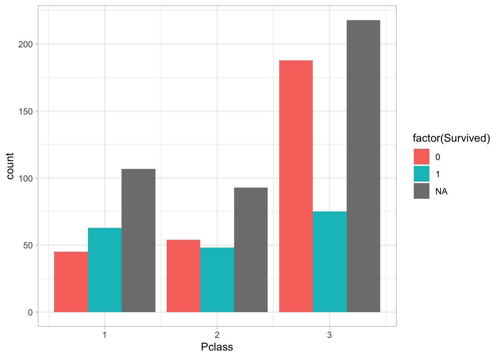
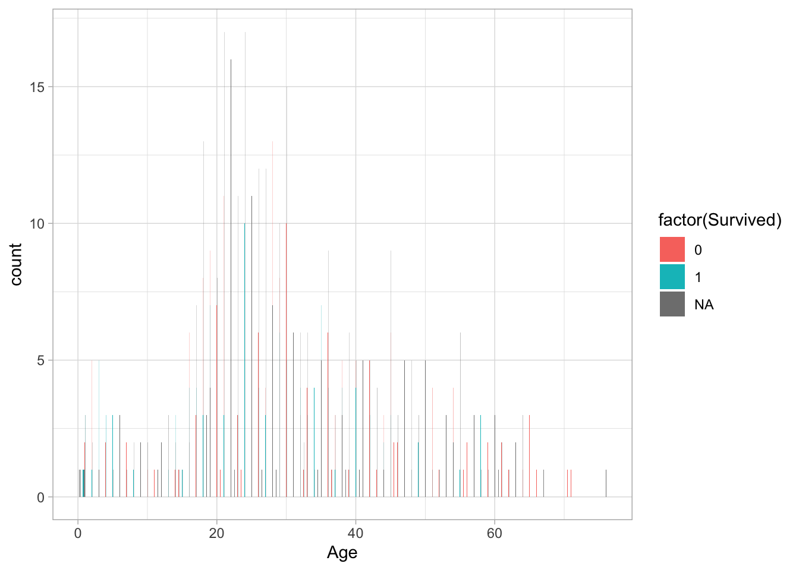
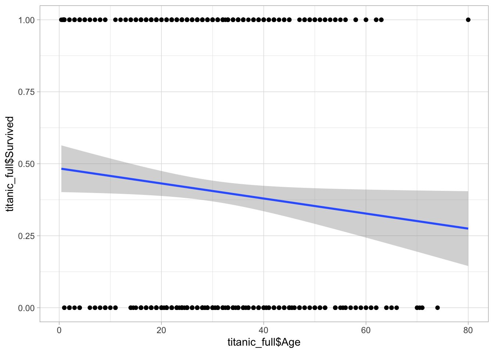
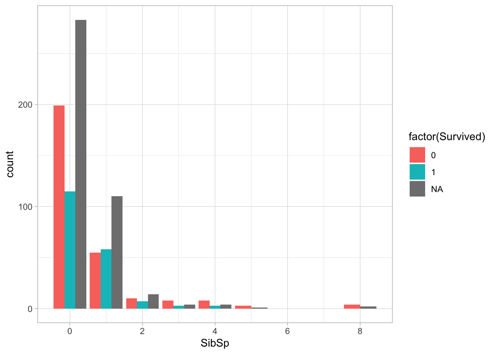
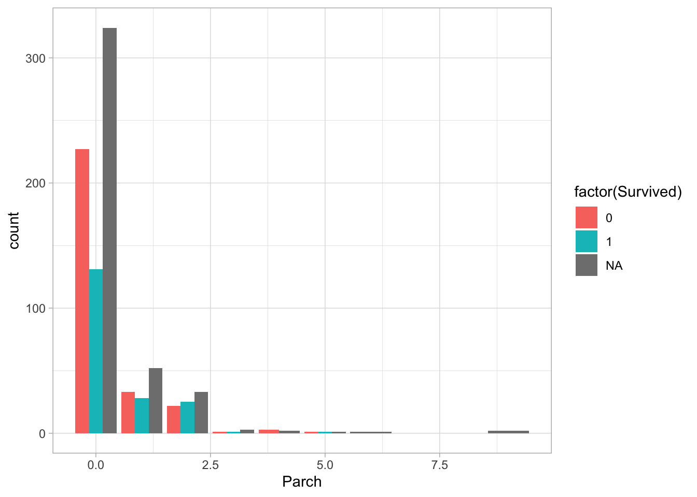
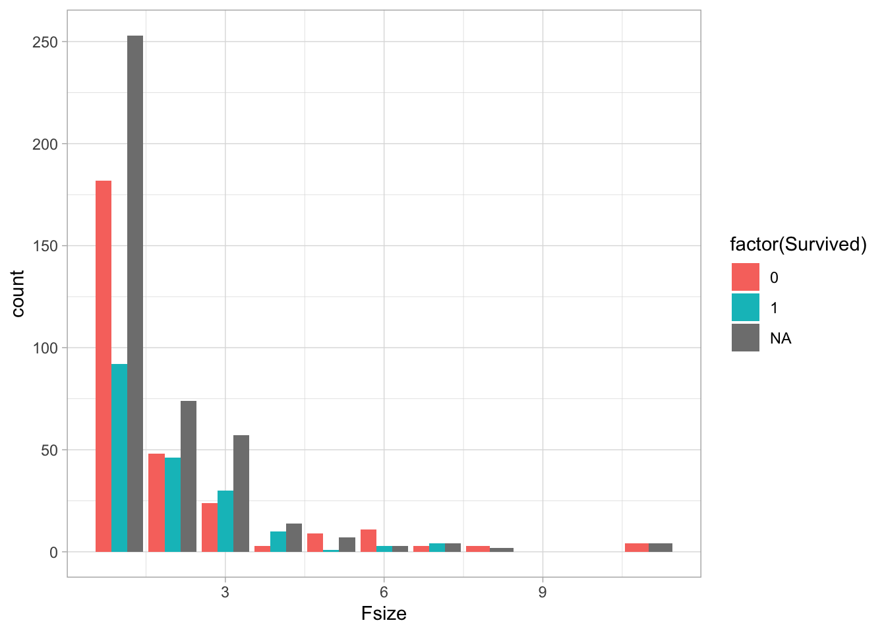
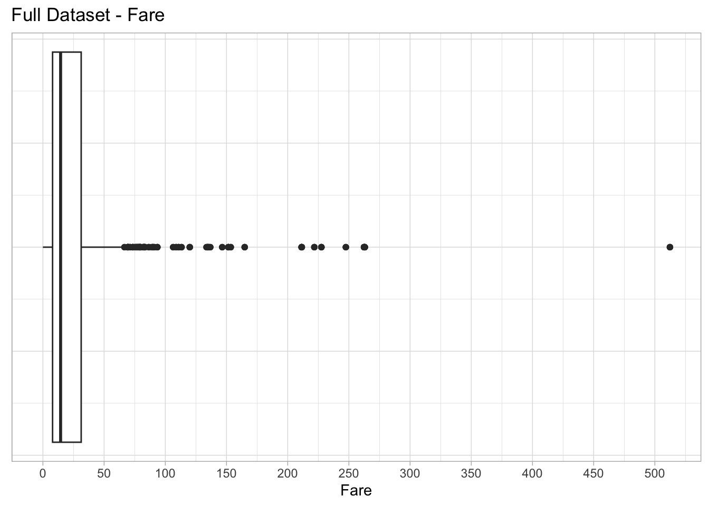
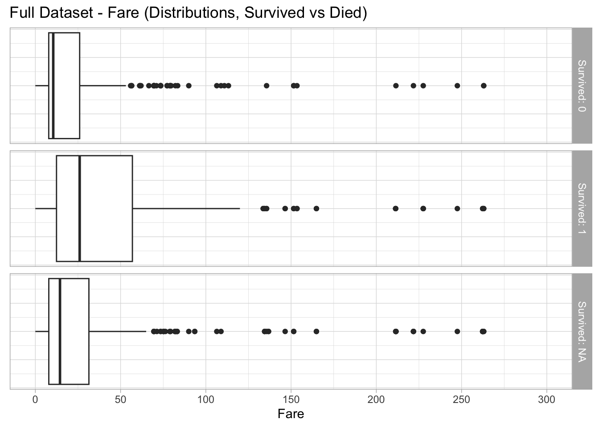
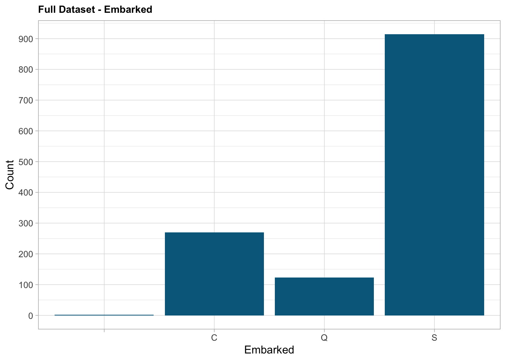
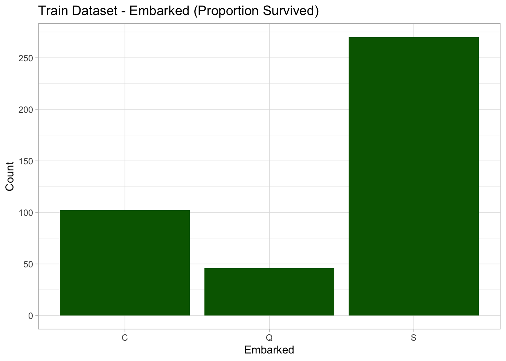

Combined into one full data set. Referring to the data set, it can be seen that there are missing values in Age and Fare,and Survived have the missing value. I define the function missing_var, which I can use to get an overview of what proportion of each variable is missing, and re-use it later if I need to.
## 'data.frame': 1309 obs. of 13 variables:
## $ PassengerId: int 892 893 894 895 896 897 898 899 900 901 ...
## $ Pclass : int 3 3 2 3 3 3 3 2 3 3 ...
## $ Name : chr "Kelly, Mr. James" "Wilkes, Mrs. James (Ellen Needs)" "Myles, Mr. Thomas Francis" "Wirz, Mr. Albert" ...
## $ Sex : chr "male" "female" "male" "male" ...
## $ Age : num 34.5 47 62 27 22 14 30 26 18 21 ...
## $ SibSp : int 0 1 0 0 1 0 0 1 0 2 ...
## $ Parch : int 0 0 0 0 1 0 0 1 0 0 ...
## $ Ticket : chr "330911" "363272" "240276" "315154" ...
## $ Fare : num 7.83 7 9.69 8.66 12.29 ...
## $ Cabin : chr "" "" "" "" ...
## $ Embarked : chr "Q" "S" "Q" "S" ...
## $ Test_Data : num 0 0 0 0 0 0 0 0 0 0 ...
## $ Survived : int NA NA NA NA NA NA NA NA NA NA ...## PassengerId Pclass Name Sex
## Min. : 1 Min. :1.000 Length:1309 Length:1309
## 1st Qu.: 328 1st Qu.:2.000 Class :character Class :character
## Median : 655 Median :3.000 Mode :character Mode :character
## Mean : 655 Mean :2.295
## 3rd Qu.: 982 3rd Qu.:3.000
## Max. :1309 Max. :3.000
##
## Age SibSp Parch Ticket
## Min. : 0.17 Min. :0.0000 Min. :0.000 Length:1309
## 1st Qu.:21.00 1st Qu.:0.0000 1st Qu.:0.000 Class :character
## Median :28.00 Median :0.0000 Median :0.000 Mode :character
## Mean :29.88 Mean :0.4989 Mean :0.385
## 3rd Qu.:39.00 3rd Qu.:1.0000 3rd Qu.:0.000
## Max. :80.00 Max. :8.0000 Max. :9.000
## NA's :263
## Fare Cabin Embarked Test_Data
## Min. : 0.000 Length:1309 Length:1309 Min. :0.0000
## 1st Qu.: 7.896 Class :character Class :character 1st Qu.:0.0000
## Median : 14.454 Mode :character Mode :character Median :1.0000
## Mean : 33.295 Mean :0.6807
## 3rd Qu.: 31.275 3rd Qu.:1.0000
## Max. :512.329 Max. :1.0000
## NA's :1
## Survived
## Min. :0.0000
## 1st Qu.:0.0000
## Median :0.0000
## Mean :0.3838
## 3rd Qu.:1.0000
## Max. :1.0000
## NA's :418This is the passenger’s ID. The number 1 - 891 is train data and 892 - 1309 is test data.
## int [1:1309] 892 893 894 895 896 897 898 899 900 901 ...Many tickets were Pclass=3, and Pclass=3 passengers were found to have lower survivability.
##
## 1 2 3
## 0.2467532 0.2116119 0.5416348##
## 0 1
## 1 0.3703704 0.6296296
## 2 0.5271739 0.4728261
## 3 0.7576375 0.2423625
There were two people with the same name. The data shows that they were different people.
## [1] TRUE## PassengerId Survived Name Age Ticket
## 1 892 NA Kelly, Mr. James 34.5 330911
## 2 898 NA Connolly, Miss. Kate 30.0 330972
## 3 290 1 Connolly, Miss. Kate 22.0 370373
## 4 697 0 Kelly, Mr. James 44.0 363592##
## female male
## 0.3559969 0.6440031Younger age passengers show higher survival rates. Age has quite a problem with missing value. I will deal with this problem later. 

The number of siblings/spouse aboard the titanic. The mortality rate is higher for those with fewer siblings and spouses.
##
## 0 1
## 0 398 210
## 1 97 112
## 2 15 13
## 3 12 4
## 4 15 3
## 5 5 0
## 8 7 0##
## 0 1
## 0 0.6546053 0.3453947
## 1 0.4641148 0.5358852
## 2 0.5357143 0.4642857
## 3 0.7500000 0.2500000
## 4 0.8333333 0.1666667
## 5 1.0000000 0.0000000
## 8 1.0000000 0.0000000 ### Parch The number of parents/children aboard the titanic. The mortality rate is higher when the number of parents and children is smaller. Base on the visualization of SibSp and Parch, the family size seems to be related to the survive. Therefore, I create the new variable to indicate the family size.
##
## 0 1
## 0 445 233
## 1 53 65
## 2 40 40
## 3 2 3
## 4 4 0
## 5 4 1
## 6 1 0
## 9 0 0##
## 0 1
## 0 0.499438833 0.261503928
## 1 0.059483726 0.072951740
## 2 0.044893378 0.044893378
## 3 0.002244669 0.003367003
## 4 0.004489338 0.000000000
## 5 0.004489338 0.001122334
## 6 0.001122334 0.000000000
## 9 0.000000000 0.000000000
Passengers with more family members are expected to have higher survival rates, so a new variable was created to indicate the number of family members.
##
## 0 1
## 1 374 163
## 2 72 89
## 3 43 59
## 4 8 21
## 5 12 3
## 6 19 3
## 7 8 4
## 8 6 0
## 11 7 0##
## 0 1
## 1 0.419753086 0.182940516
## 2 0.080808081 0.099887767
## 3 0.048260382 0.066217733
## 4 0.008978676 0.023569024
## 5 0.013468013 0.003367003
## 6 0.021324355 0.003367003
## 7 0.008978676 0.004489338
## 8 0.006734007 0.000000000
## 11 0.007856341 0.000000000
This is the Ticket number. Several passengers are fond to have the same ticket number, This could mean that family members or others who rode together may have shared tickets.
## [1] 929## # A tibble: 929 × 2
## # Groups: Ticket [929]
## Ticket n
## <chr> <int>
## 1 CA. 2343 11
## 2 1601 8
## 3 CA 2144 8
## 4 3101295 7
## 5 347077 7
## 6 347082 7
## 7 PC 17608 7
## 8 S.O.C. 14879 7
## 9 113781 6
## 10 19950 6
## # … with 919 more rows## # A tibble: 930 × 3
## # Groups: Ticket, Fare [930]
## Ticket Fare n
## <chr> <dbl> <int>
## 1 CA. 2343 69.6 11
## 2 1601 56.5 8
## 3 CA 2144 46.9 8
## 4 3101295 39.7 7
## 5 347077 31.4 7
## 6 347082 31.3 7
## 7 PC 17608 262. 7
## 8 S.O.C. 14879 73.5 7
## 9 113781 152. 6
## 10 19950 263 6
## # … with 920 more rowsPeople with the same ticket have the same fare except the number 7534.
## PassengerId Pclass Name Sex Age SibSp Parch Ticket
## 1 139 3 Osen, Mr. Olaf Elon male 16 0 0 7534
## 2 877 3 Gustafsson, Mr. Alfred Ossian male 20 0 0 7534
## Fare Cabin Embarked Test_Data Survived Fsize
## 1 9.2167 S 1 0 1
## 2 9.8458 S 1 0 1This is the passenger’s fare. This shows a very right-skewed data and there is one outliers at >500.  After excluding outliers, the relationship between fares and survival rates was examined and found that those who purchased more expensive tickets had higher survival rates.  ### Cabin The cabine number. There were lots of NA’s
## [1] 1014It is possible to see certain trends in passengers whose Cabin’ data is missing.
The port that the passenger embarked from (C = Cherbourg, Q = Queenstown, S = Southampton). We can see that almost 70% departed from Southampton.
